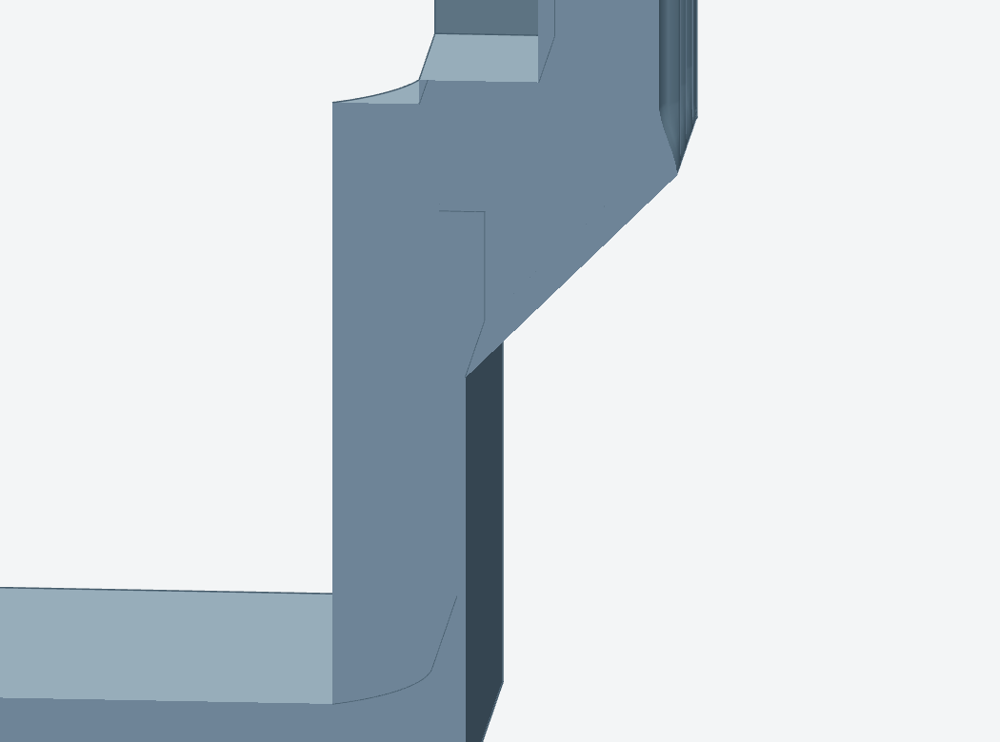
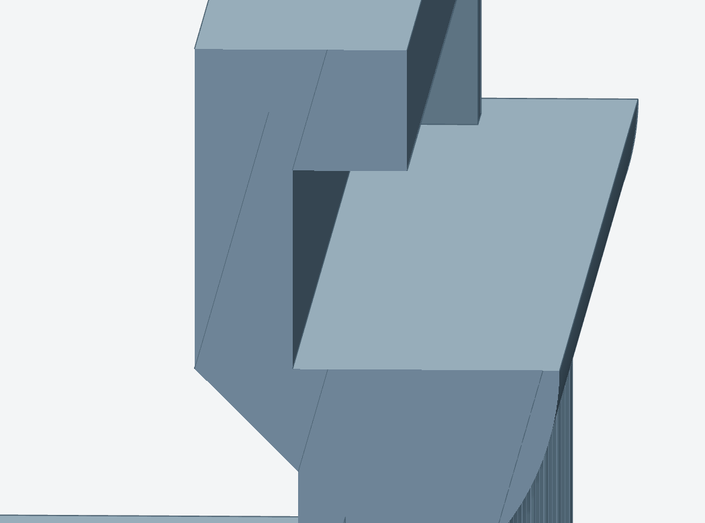

PART STUDY
Enclosure front-bottom
Integral handhold corbels carry the gripping roofs. The two flat sliding-rail roofs get the only supports.



Follow the support out
The reviewed full-part slice has {{front:/summary/interface_islands}} contacts and {{front:/summary/model_rooted_bodies}} trees rooted on the model. Each tree starts on a cavity floor. Lever the support free with a tool through the open sliding lane and withdraw it before assembly.
Preserve the corbel, the full rail bearing and the open exit. Use the full-length assembly to judge clearance after a coupon fit.
Front-bottom in the machine · Full slice contact review · Full-part removal observation · Rail coupon result